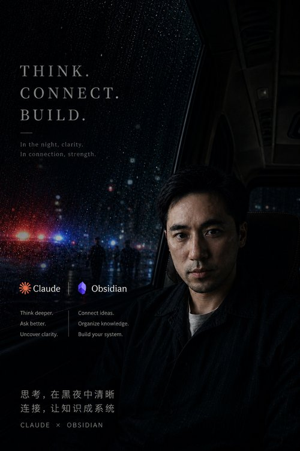

我的日常工作在法庭——构建论证、拆解对手逻辑、在法律条文的缝隙中寻找确定性。但我的思考并不止于法庭。过去几年，我系统性地投入于认知科学、古典写作风格、论证理论、以及朱光潜的美学。这些看起来不相关的领域，在法律实践中交汇成了一张独特的思维地图。
我相信写作是思考的外化——每一篇法律文书，都是一次对思维秩序的建造。我也相信 AI 时代的到来不会让深度思考贬值，反而会让那些能够清晰地思考、精确地表达的人更加稀缺。
"获得勇气是我的人生使命。每一次打破恐惧、迎面而上之后，体验到的不是消耗，而是更纯粹的行动状态。"— 夏瑾卓
以 Williams & Colomb 的五要素论证金字塔为底层框架，结合 CRAR 法律论证黄金范式，为每个案件构建从主张到证据的完整逻辑链。不堆砌论点，只建造论证。
以古典风格的清晰性为原则——让读者（法官）以最小认知负荷理解你的逻辑。每一个句子都顺应大脑的处理节律：锚点优先、话题连续、句末安全。
运用结构化 AI 辅助进行类案检索——从事实梳理到裁判逻辑拆解，再到综合判断与风险评级。让每一个诉讼决策都有数据支持，而非仅凭直觉。
一旦你知道了某件事，就几乎不可能想象不知道它是什么感觉。这是法律写作中最隐蔽的陷阱——不是法律适用错误，而是认知预设错误。
阅读更多 →锚点优先、事件模型优先、话题连续性、句末安全区——这四个节律特征解释了为什么有些句子读起来流畅，有些让人反复回读。
阅读更多 →理由是写作者对证据的概括和解释——证据不会自己说话。区分理由与证据，是构建不可推翻之论证的第一步。
阅读更多 →实用、科学、美感——朱光潜用对一棵古松的三种态度，解释了为什么法律人需要审美的维度来平衡理性的锋利。
阅读更多 →哲学不是记忆理论，是四个追问动作——追问前提、概念分析、发现隐藏矛盾、寻找底层结构。法律人每天都在做这些，只是没意识到它们叫"哲学"。
阅读更多 →将多年积累的法律写作方法论和认知框架，封装为可复用的 AI 提示词模板和工作流。不是教你做什么——而是给你一个已经验证过的思考框架。
结构化 AI 提示词模板：角色设定 → 检索条件 → 六节输出框架 → 综合判断与风险评级。让每一个诉讼决策都有数据支持。
九维度分析框架自动拆解画面要素，生成可一比一还原的 AI 生成提示词。支持画面分析模式和文字转提示词模式。
基于 Williams & Colomb 论证理论的完整思维框架。从主张到承认与回应，五大要素构建不可推翻的法律论证。
从笔记到行为的完整闭环：教学（社交化）、实施（实验性）、创作（公共输出）、文档化（环境设计）。让知识不止于存储。
如果你对法律论证方法、认知写作、或 AI 工具产品化感兴趣——欢迎交流。
我尤其愿意与以下方向的朋友深入探讨：法律写作的认知科学基础、古典风格在法律文书中的应用、AI 时代的知识工作流设计。